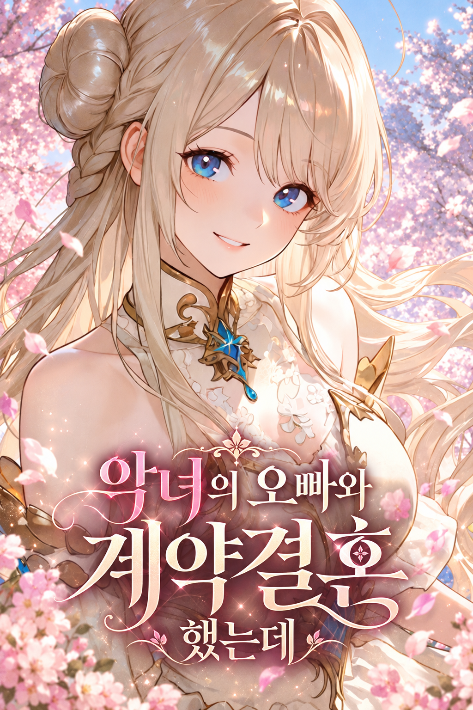
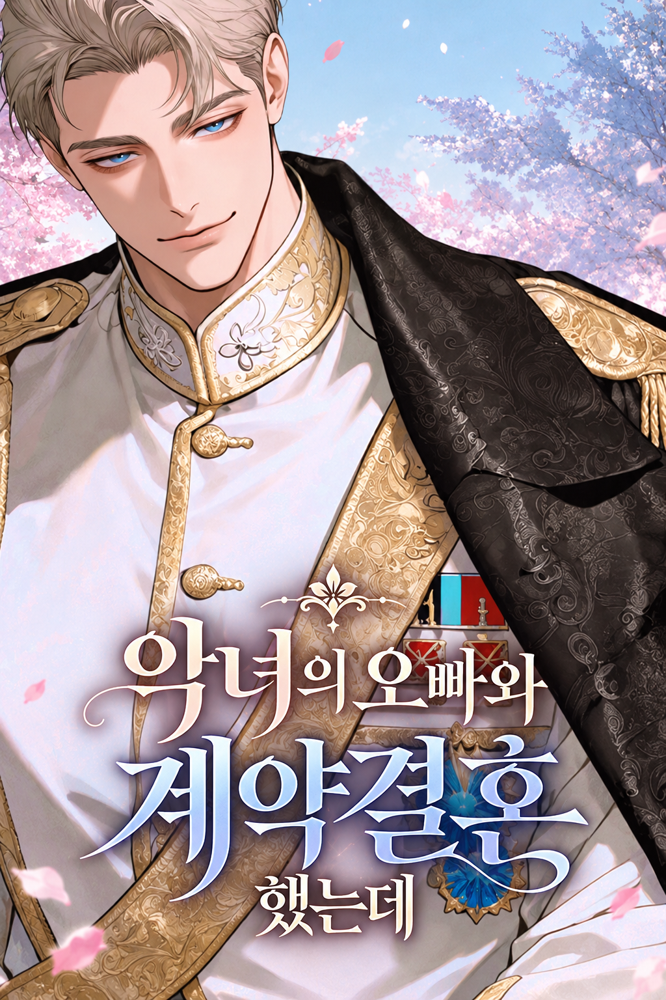

황궁, 세계수의 그늘 아래
- 수도 중심에 자리한 대리석 건물.
- 중앙정원·본궁·온실·별궁으로 구성.
- 첨단 마도 설비를 갖추고 꽃향기가 감도는 공간.
- 황궁 중앙에 뿌리내린 세계수.
Royal Contract Romance
안정적인 배우자를 원하는 황태자와 황실의 보호가 필요한 당신. 완벽한 계약 뒤로, 한때 당신을 증오했던 황녀가 다정한 얼굴로 다시 다가온다.


/제국일정/제국일정을 이용하시면, 해당 이벤트들을 즐기실 수 있어요!
/마도코어/마도코어 사용 시, 해당 캐릭터들의 AI이용내역 같은 걸 보실 수 있어요!
필레온의 질문배우자가 견과 바를 보냈다. 품위 있되 지나치게 감정적이지 않은 감사 쪽지를 써 줘.
견과 바 감사 쪽지에 품위까지 챙김? 님 서류랑 결혼함? 🙄
“간식은 잘 받았소. 덕분에 서류를 견딜 힘이 생겼군.”
이 정도면 됨. 감사 인사는 배우자한테 직접 하셈. 1골드 끝.